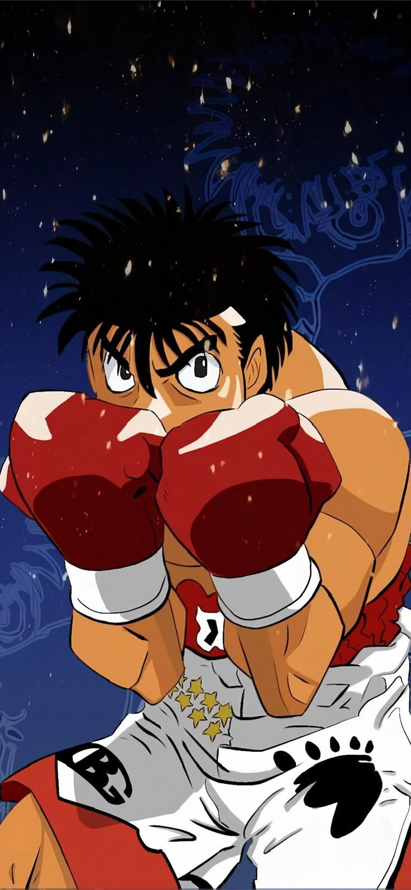

|  | BIOGRAFIA |
|---|---|
|
Ippo era um jovem tímido que sofria bullying e ajudava a mãe na loja de barcos da família.
Sua vida mudou quando foi salvo por um boxeador profissional e levado para a academia Kamogawa. Lá,
descobriu talento natural, determinação incomum e uma força de vontade gigantesca. Com esforço incansável,
Ippo evoluiu de iniciante inseguro para um dos boxeadores mais promissores do Japão, sempre lutando com
coração, humildade e um desejo sincero de entender “o que significa ser forte”. | |
| ARMAS | |
|
Punhos de Boxeador: Golpes extremamente pesados, precisos e treinados para máximo impacto. Força e Resistência Sobre-humanas: Ippo aguenta quantidades absurdas de dano e tem uma força de soco fora do comum graças ao treino brutal. | |
| Habilidades | |
|
Dempsey Roll: Sequência de golpes alternados enquanto balança o corpo, criando força crescente em cada soco. Gazelle Punch: Um golpe explosivo para cima, inspirado no lendário Mike Tyson. Peek-a-Boo Defense: Estilo defensivo que protege a cabeça e permite contra-ataques rápidos. |